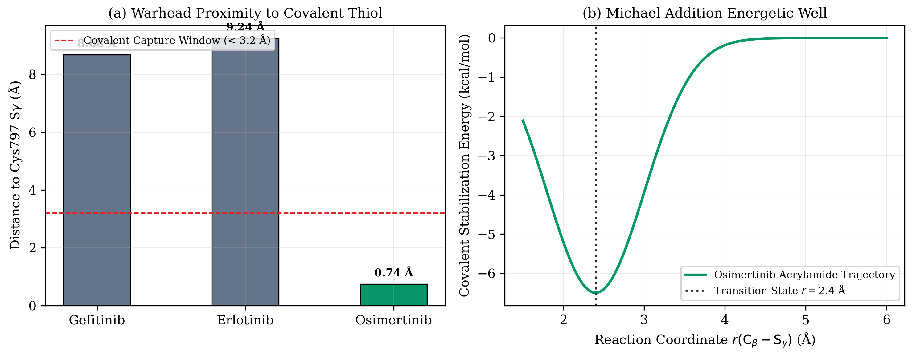

DAKSHESH
DAS
16-year-old researcher, algorithmic engineer, and builder. Rejecting black boxes. Writing differential equation solvers, empirical force fields, and quantitative arbitrage pipelines from first principles in pure Python.
Selected Systems
Every system built from fundamental mathematics. Zero artificial abstractions, zero borrowed assumptions.
3D Simulation Lab
Directly manipulate physical and mathematical parameters. Rotate the 3D scene, alter potential barrier heights, and inspect non-equilibrium geometries.
Omni Studio & Video Lab
Cinematic visual blueprints engineered for Google Omni, Veo, and Blender rendering. Translating rigorous mathematical proofs into hyper-realistic physical simulations.

Photorealistic volumetric fluid simulation of a Gaussian probability density wavepacket tunneling through a curved titanium potential barrier.

Cryo-EM molecular dynamics render showing 3rd-gen Osimertinib locking covalently into the mutated T790M kinase binding pocket.

Holographic 3D visualization of a multi-asset covariance surface undulating under Ornstein-Uhlenbeck mean-reverting pressure.
The Action Manifesto
How ruthless physical discipline and decisive execution cure analytical paralysis.
"You cannot defeat analytical overthinking with more thinking. Drop into the body, lift the iron, run the code, and execute."
In Notes from Underground, acute self-awareness freezes men into inaction. When consciousness endlessly analyzes itself, it manufactures excuses: "Does this even matter? Am I just wasting time?" That is analytical inertia trying to halt momentum.
The antidote is Action Mode. When high intellectual consciousness is anchored to physical iron discipline (180 cm athletic build, relentless gym discipline, conscious celibacy), it synthesizes into the Warrior-Philosopher: visionary, sharp, and decisive.
-
01.
Never apologize for high ambition. The world is shaped by those who refuse to be lukewarm.
-
02.
When the mind doubts, the body acts. Physical discipline kills analytical paralysis.
-
03.
Master the hard things first. Mathematics, algorithms, and leverage make you dangerous.
-
04.
Stack proof, not words. Let the work speak for itself.